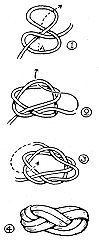

In connection with the preparation of your own Turk's head knot for a home-made slip-on, the Sea Scout Manual gives a description of the way to make a Turk's head, as follows:

Three Stranded Turk's Head
Take two round turns around the rope on which you intend working the knot, or around the index finger of your left hand. Pass the upper bight down through the lower, and reeve the upper end down through it; then pass the bight up again, and reeve the end over the lower bight and up between it and the upper one; dip the upper down through the lower bight again, reeve the end down over what is now the upper bight, and between it and the lower; and so proceed, working round to your right until you meet the other end when you pass through the same bight and follow the other end round and round until you have completed a plait of two, three or more lays, along the three strands of the Turk's head.